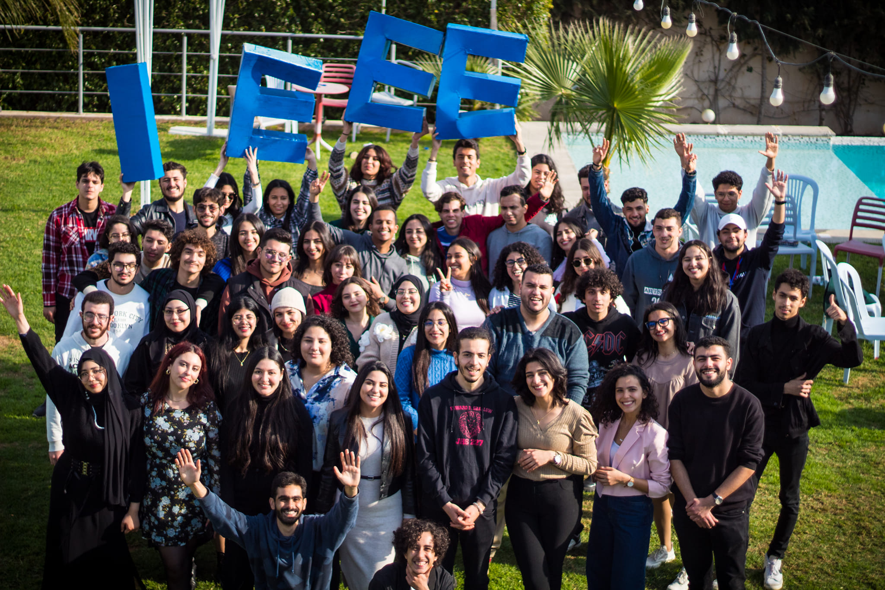
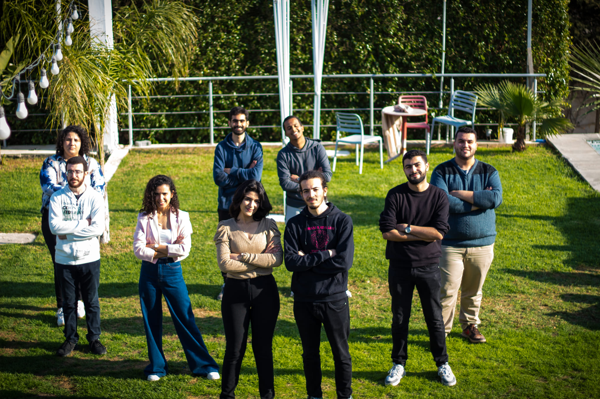
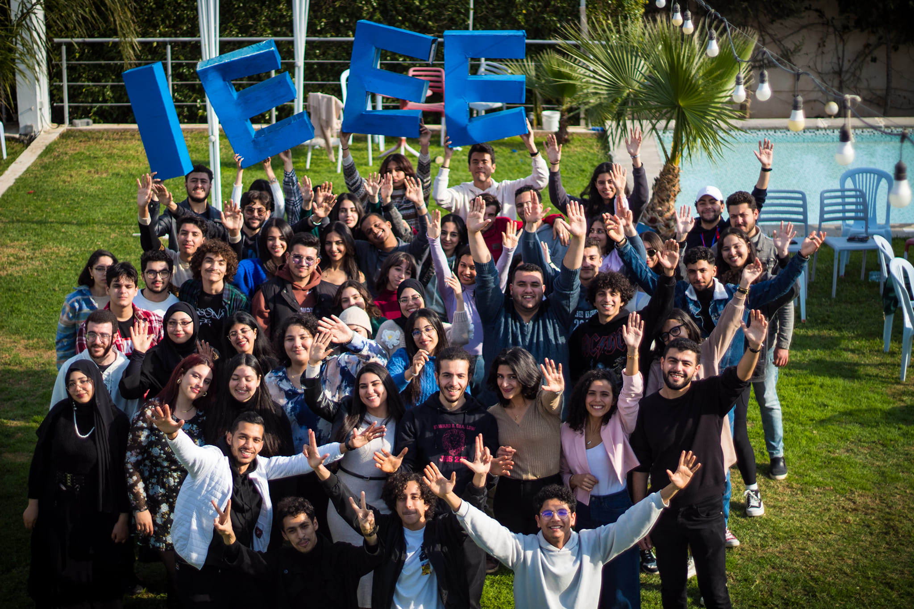

Date: 18/02/2024
The "Integration Day with FST" was a collaborative event between IEEE ENSIT SB and IEEE FST SB, designed to introduce new engineering students from preparatory schools to the world of engineering. Through insightful presentations, engaging discussions, and interactive sessions, students gained a clearer understanding of engineering life and career paths. The event featured experts from both organizations sharing their experiences and providing valuable guidance to help students make informed decisions about their future in engineering. This event successfully bridged the gap between theoretical knowledge and real-world engineering, inspiring students to pursue their passions with confidence.